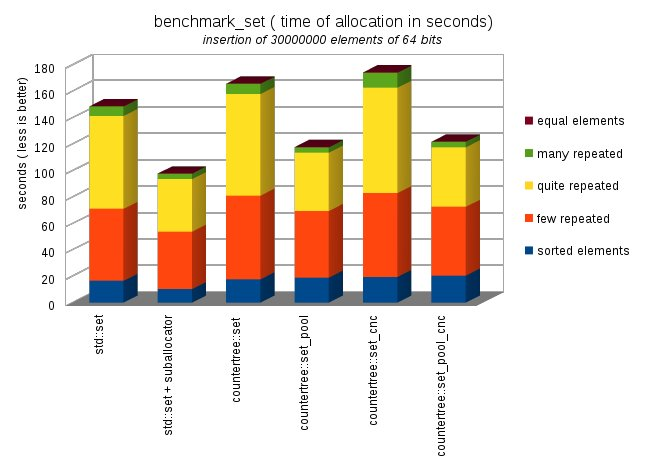
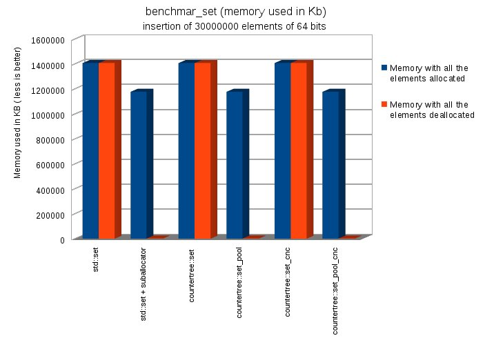
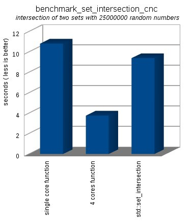
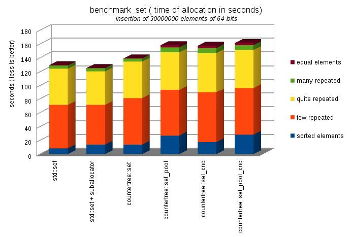
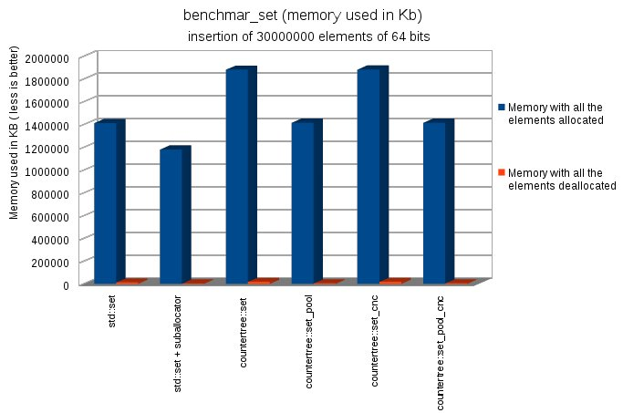
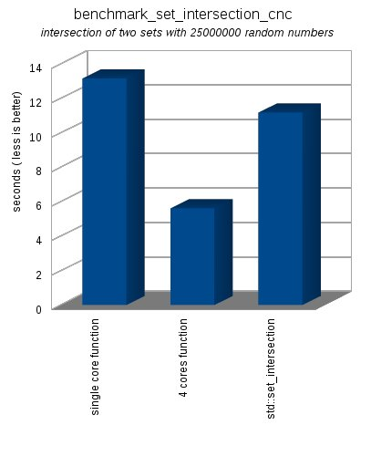
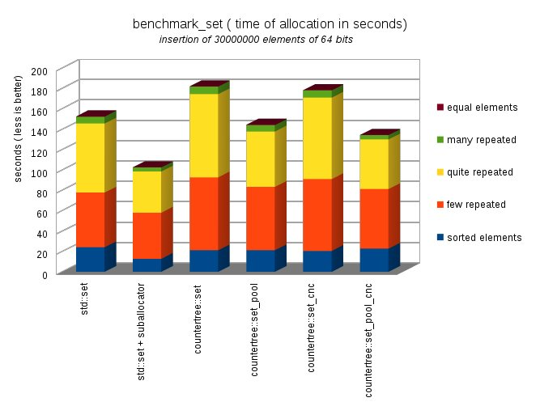
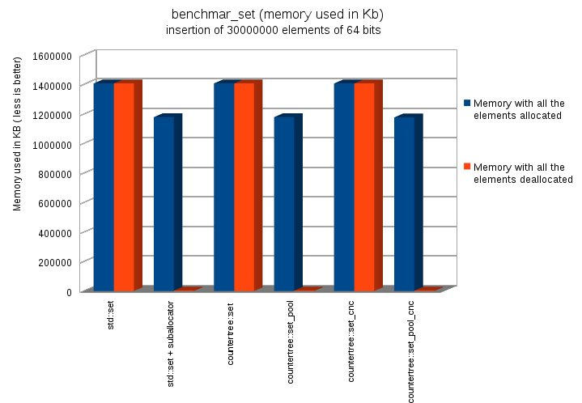
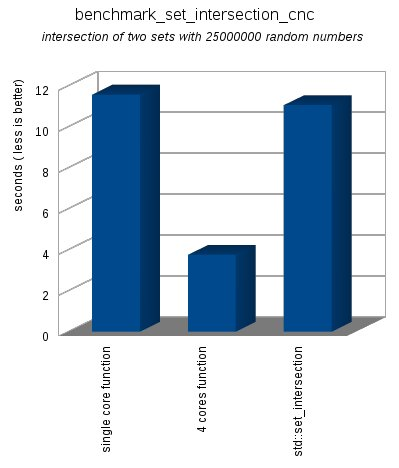

>>>>>>> a638c30ad722b2664968a5babd793174f3466a44
The [ Counter Tree + Suballocator ] Library
Francisco Jose Tapia Copyright ©
2010-2013 Francisco Jose Tapia
3.7.-
Benchmarks (GCC 4.7, VC++ 13, CLANG 3.3)
The next graphs show you the time comparing the
std::set,
countertree::set, and countertree_set_pool. Take consideration
that the countertree structures are more complex than the STL structures
due to they must manage not only the pointers, they must manage too the
counters of the nodes, which permit the access by position.
The benchmark have 3 parts:
- The insertion of several collections of 30.000.000 numbers of 64
bits in the Data Structure selected from from a menu, checking the
time needed by each data structure in seconds ( less is better).
- The same but checking the RAM memory used by the program with all
the elements allocated and with all the elements deallocated. This
shows the memory consumption, and the capability of the allocators
for to return memory to the operating system and decrease the memory
used by the program.
- This program make the intersection of two
sets with 25000000 elements filled with random numbers
checking the time needed ( less is better). This procedure is
done in three different ways
- The single core function use the same
algorithm running over a countertree::set
- The 4 cores function use a concurrent
algorithm running over a countertree::set_cnc.
- Using the function set_intersection, defined
in <algorithm>
3.7.1.-
Benchmarks GCC 4.7

| BENCHMARK_SET
Time ( less is better) |
This program insert 30000000 elements of 64 bits checking
the time needed ( less is better) |
|
sorted elements |
few repeated |
quite repeated |
many repeated |
equal elements |
TIME TOTAL |
| std::set |
16,52 |
54,49 |
70,198 |
7,26 |
0,1 |
148,568 |
| std::set + suballocator |
10,1 |
43,61 |
39,7 |
4,2 |
0,1 |
97,71 |
| countertree::set |
17,659 |
63,23 |
77,089 |
7,58 |
0,129 |
165,687 |
| countertree::set_pool |
18,81 |
50,56 |
44,15 |
3,98 |
0,24 |
117,74 |
| countertree::set_cnc |
19,39 |
63,51 |
79,75 |
11,35 |
0,32 |
174,32 |
| countertree::set_pool_cnc |
20,37 |
52,12 |
45 |
4,17 |
0,2 |
121,86 |

| BENCHMARK_SET memory size ( less is better) |
This program make allocations and deallocations of
30000000 elements of 64 bits checking the memory size used
( less is better) |
|
Memory with all the elements allocated |
Memory with all the elements deallocated |
| std::set |
1407324 |
1407504 |
| std::set + suballocator |
1177784 |
2708 |
| countertree::set |
1407324 |
1407512 |
| countertree::set_pool |
1177376 |
2712 |
| countertree::set_cnc |
1407328 |
1407508 |
| countertree::set_pool_cnc |
1177876 |
2708 |

| BENCHMARK_SET_INTERSECTION_CNC |
This program make the intersection of two sets with
25000000 elements filled with random numbers checking the
time needed ( less is better).
The 4 cores function use a concurrent
algorithm running over a countertree::set_cnc.
The single core function use the same algorithm running
over a countertree::set |
|
Time spent in
seconds |
| single
core function |
10,81 |
| 4
cores function |
3,76 |
std::set_intersection
<function>
|
9,392 |

3.7.2.-
Benchmarks VC++ 13

| BENCHMARK_SET
Time ( less is better) |
This program insert 30000000 elements of 64 bits checking
the time needed ( less is better) |
|
sorted elements |
few repeated |
quite repeated |
many repeated |
equal elements |
TIME TOTAL |
| std::set |
8,262 |
62,9149 |
53,2585 |
4,617 |
0,327 |
129,3794 |
| std::set + suballocator |
13,712 |
57,4705 |
49,2649 |
4,57 |
0,343 |
125,3604 |
| countertree::set |
13,6344 |
67,4233 |
53,679 |
4,305 |
0,296 |
139,3377 |
| countertree::set_pool |
26,757 |
66,986 |
54,303 |
7,129 |
3,2604 |
158,4354 |
| countertree::set_cnc |
17,4096 |
72,0721 |
57,5 |
7,34 |
3,24 |
157,5617 |
| countertree::set_pool_cnc |
28,1268 |
68,1563 |
55,0525 |
7,035 |
3,182 |
161,5526 |

| BENCHMARK_SET memory size ( less is better) |
This program insert 30000000 elements of 64 bits checking
the memory size used ( less is better) |
|
Memory with all the elements allocated |
Memory with all the elements deallocated |
| std::set |
1414228 |
12712 |
| std::set +
suballocator |
1180964 |
3256 |
| countertree::set |
1883100 |
17604 |
| countertree::set_pool |
1416860 |
4420 |
| countertree::set_cnc |
1884144 |
18376 |
| countertree::set_pool_cnc |
1416864 |
4428 |

| BENCHMARK_SET_INTERSECTION_CNC |
This program make the intersection of two sets
with 25000000 elements filled with random numbers checking
the time needed ( less is better).
The 4 cores function use a concurrent
algorithm running over a countertree::set_cnc.
The single core function use the same algorithm running
over a countertree::set |
|
Time spent in seconds |
| single core function |
13,1501 |
| 4 cores function |
5,616 |
std::set_intersection
<function>
|
11,185 |

3.7.3.-
Benchmarks CLANG 3.3

| BENCHMARK_SET
Time ( less is better) |
This program insert 30000000 elements of 64 bits checking
the time needed ( less is better) |
|
sorted elements |
few repeated |
quite repeated |
many repeated |
equal elements |
TOTAL TIME |
| std::set |
24,1126 |
53,7237 |
67,611 |
6,839 |
0,25 |
152,5363 |
| std::set + suballocator |
12,8164 |
45,2689 |
40,3114 |
4,013 |
0,251 |
102,6607 |
| countertree::set |
21,2533 |
71,496 |
81,7057 |
7,266 |
0,318 |
182,039 |
| countertree::set_pool |
21,1522 |
62,2116 |
54,3775 |
6,1079 |
0,5377 |
144,3869 |
| countertree::set_cnc |
20,4735 |
70,5697 |
79,9734 |
7,111 |
0,33 |
178,4576 |
| countertree::set_pool_cnc |
22,7229 |
58,5538 |
48,6795 |
4,1612 |
0,3759 |
134,4933 |

| BENCHMARK_SET memory size ( less is better) |
This program make allocations and deallocations of
30000000 elements of 64 bits checking the memory size used
( less is better) |
|
Memory with all the elements allocated |
Memory with all the elements deallocated |
| std::set |
1407324 |
1407500 |
| std::set +
suballocator |
1178856 |
2708 |
| countertree::set |
1407328 |
1407508 |
| countertree::set_pool |
1179088 |
2708 |
| countertree::set_cnc |
1407328 |
1407512 |
| countertree::set_pool_cnc |
1177488 |
2700 |

| BENCHMARK_SET_INTERSECTION_CNC |
This program make the intersection of two sets with
25000000 elements filled with random numbers checking the
time needed ( less is better).
The 4 cores function use a concurrent
algorithm running over a countertree::set_cnc.
The single core function use the same algorithm running
over a countertree::set |
|
Time spent in seconds |
| single core function |
11,564 |
| 4 cores function |
3,745 |
| std::set_intersection |
11,0575 |

The test had been done using a QuadCore 2.4 GHz ( 8 GB of Dual Channel
1066 MHz Memory) with the C++0x options activated, and with the highest
level of optimization.


 Boost
C++ Libraries
Boost
C++ Libraries